ラボ MCS3 - ツールの定義
このラボでは、Microsoft Copilot Studio でツールを作成する方法を学びます。ツールはエージェントの中核的な構成要素の 1 つです。ツールを使用すると、外部の Power Platform コネクター (ネイティブまたはカスタム) や外部 REST API、Power Automate フロー、MCP (Model Context Protocol) サーバーなどを追加し、エージェントの機能を拡張できます。
Microsoft Copilot Studio でエージェントを作成したい場合は、次のラボをお試しください
Note
このラボは前回の ラボ MCS2 を土台にしています。同じエージェントを使い続け、新しい機能で強化してください。
ツールはグラフィカル デザイナーで作成できます。また、作成後に低レベル コード エディターで定義を編集し、細かな調整を行うことも可能です。
このラボで学ぶ内容:
- Power Platform コネクターを呼び出すツールの作成方法
- Power Automate フローを呼び出すツールの作成方法
- トピックからツールを呼び出す方法
Exercise 1 : Microsoft Copilot Studio でのツール作成
この演習では、ラボ MCS2 で作成したエージェントを拡張し、Excel Online を使用して SharePoint Online のドキュメント ライブラリに保存された Excel ブックから想定上の候補者リストを取得できるようにします。次に、同じブックへ新しい候補者を追加する Power Automate フローを呼び出すツールを追加します。
Step 1: Power Platform コネクターの利用
新しいツールを作成するには、画面上部で 1️⃣ Tools タブを選択し、2️⃣ + Add a tool を選択してツールの作成を開始します。
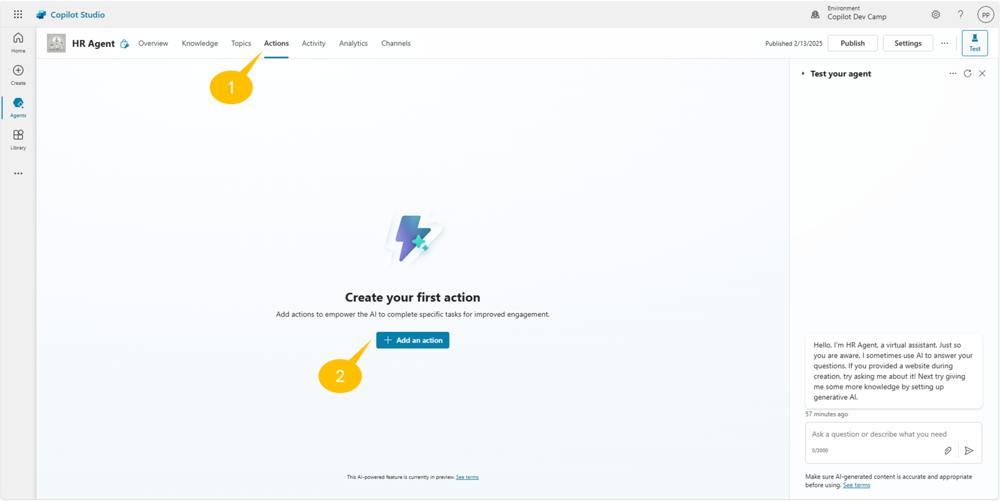
ツールの種類を選択するダイアログが表示されます。既定では Featured ツールがいくつか用意されており、Excel Online などの一般的なサービスと連携できます。
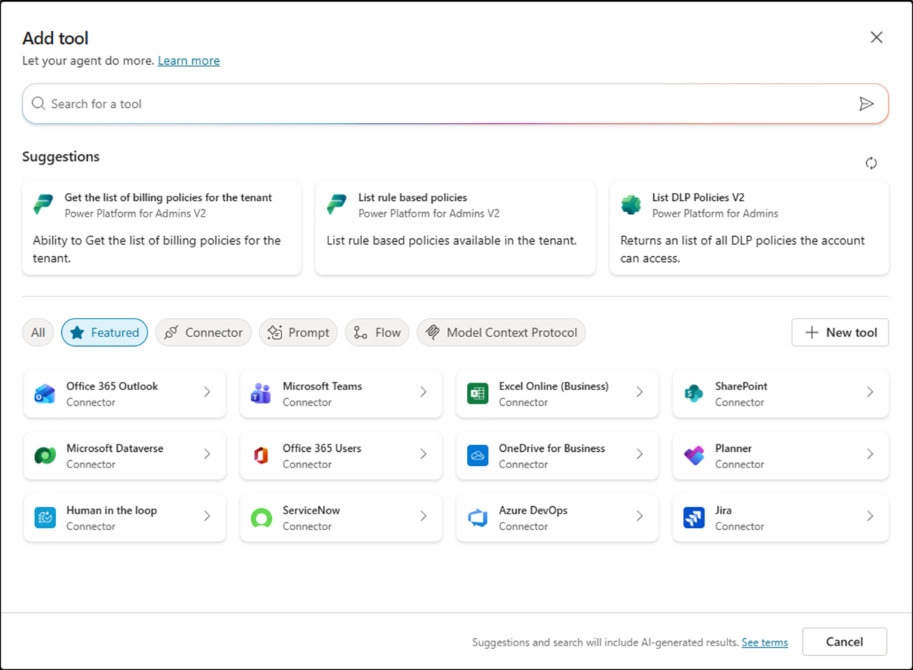
+ New tool を選択してツールをゼロから作成することもできます。選択肢は以下のとおりです。
- Prompt: 自然言語で記述したプロンプトを用いて AI ツールを呼び出します。
- Agent flow: Power Automate フローを呼び出します (詳しくは Step 2 を参照)。
- Custom connector: Power Platform カスタム コネクターを呼び出します。
- REST API: 外部 REST API を呼び出します。詳細は こちら を参照してください。
- Model Context Protocol: 外部 MCP サーバーのツールを呼び出します。
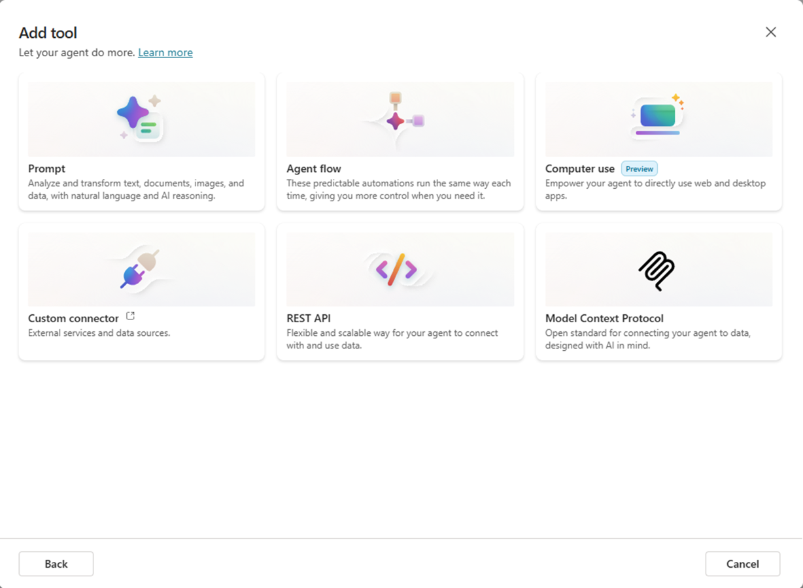
目的のオプションが Featured にない場合は All グループに切り替え、テキスト検索で探します。
今回の手順では、Featured ツール Excel Online (Business) を選択し List rows present in a table を選びます。まず Connection で Create new connection を選択して外部コネクターへの接続を作成します。

アカウントでサインインし、Excel Online (Business) へのアクセスを許可します。接続が構成されると Add to agent または Add and configure のコマンドが表示されます。
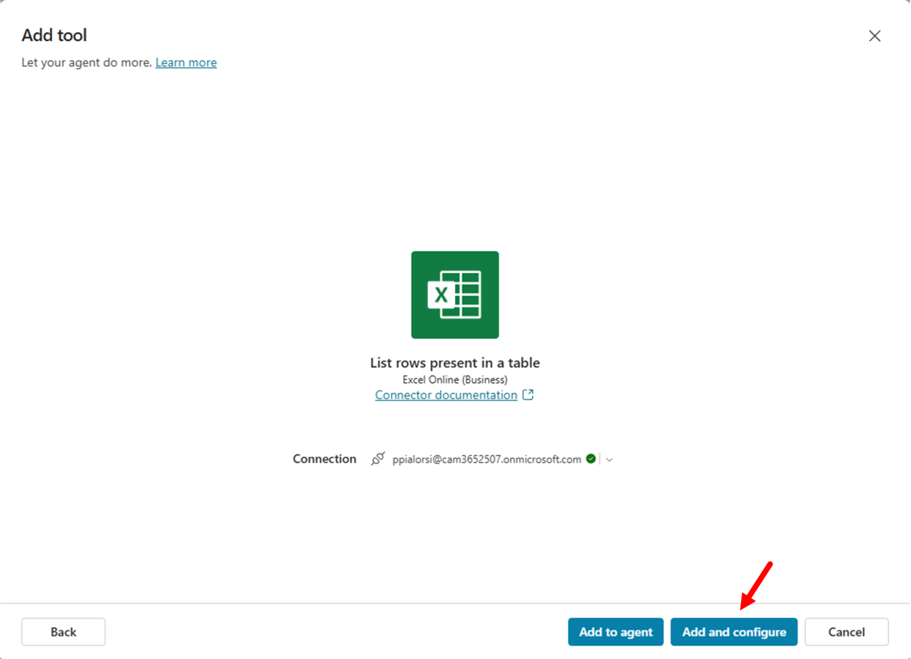
続いてツールの設定ページが表示されます。以下を入力します。
- Name: ツールの説明的な名前
- Description: ジェネレーティブ オーケストレーションがツールを使用するタイミングを判断するための自然言語による説明
- Inputs: ツールの入力パラメーター
- Completion: ツールがユーザーへのリクエストとレスポンスをどのように処理するか
設定を行う前に、候補者リストを含む Excel ブックを準備します。次の リンク からサンプル ファイルをダウンロードしてください。
同じテナント内の SharePoint Teams サイトの Documents ライブラリにアップロードします。ドキュメントは Microsoft 365 Copilot で生成した想定上の候補者リストです。
- サイト コレクションの絶対 URL をコピー (例:
https://xyz.sharepoint.com/sites/contoso/) - ドキュメント ライブラリ名をコピー (例:
Shared documents) - ファイル名もコピー (例:
Sample-list-of-candidates.xlsx)
Microsoft Copilot Studio に戻り、ツール設定を完了します。

以下の設定を使用します。
- Name: List HR candidates
- Description: List candidates for an HR role
次に Inputs タブを選択し、入力パラメーターを設定します。既定では必須入力が Fill as プロパティ Dynamically fill with AI になっています。
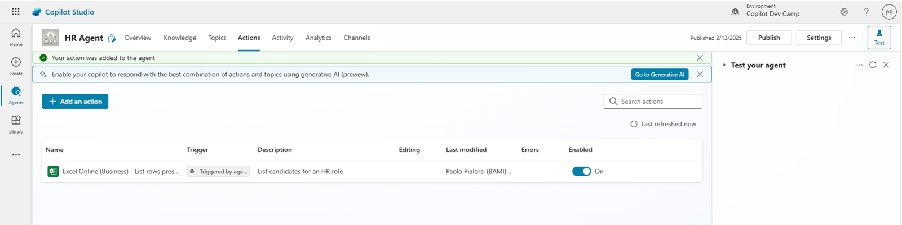
各入力パラメーターの Fill using を Custom value に変更し、静的値を設定します。
- Location: Excel ブックを保存した SharePoint Online サイトの URL (例:
https://xyz.sharepoint.com/sites/contoso/) - Document Library: ブックを保存したドキュメント ライブラリ名 (例:
Shared Documents) - File: Excel ファイル名 (例:
Sample-list-of-candidates.xlsx) - Table:
Candidates_Table
サイト、ライブラリ、ファイル、テーブルは Copilot Studio の UI で参照できます。
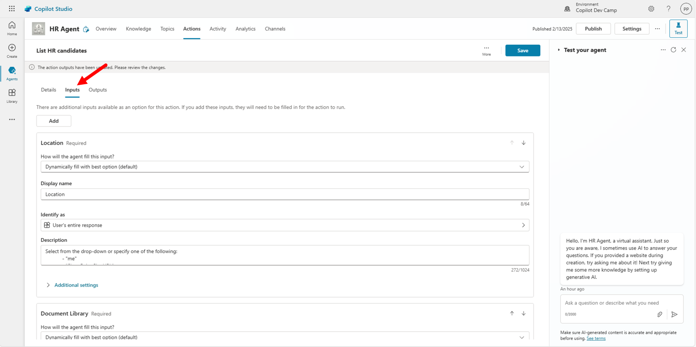
画面右上の Save を選択し、ツールを保存します。
Step 2: 新しいツールのテスト
更新したエージェントを発行し、組み込みのテスト パネルまたは Microsoft Teams で試してみましょう。
ラボ MCS2 でジェネレーティブ オーケストレーションを有効にしたので、以下のようなプロンプトを送るだけで作成したツールを呼び出せます。
Show me the list of candidates for an HR role
ジェネレーティブ オーケストレーションを使用し、テスト パネル内でプロンプトを送信すると Activity map が自動表示され、オーケストレーターの動作を確認できます。次のスクリーンショットでは、ユーザーの意図を識別し、Step 1 で作成したツールが呼び出されていることがわかります。手動で設定した入力パラメーターも確認できます。
Power Platform コネクターを利用するには有効な接続が必要なため、エージェントは Connect を求めます。
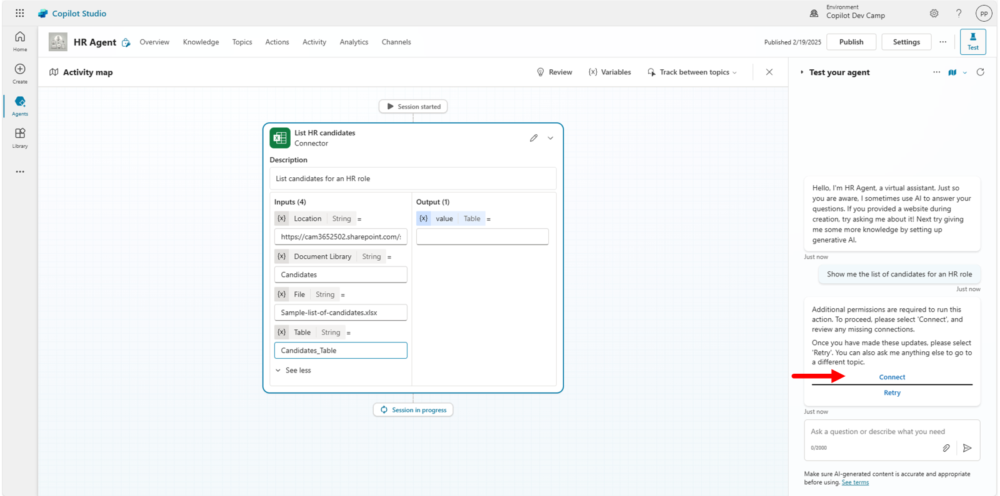
Connect を選択して接続を有効化します。新しいブラウザー タブで現在のセッションの接続一覧が表示され、Excel Online (Business) への接続が含まれます。Connect リンクを選択し Create or pick a connection ダイアログで接続を確立したら、エージェントに戻り Retry を選択してツールを実行します。テスト パネルに Excel ブックから取得した候補者リストが表示されます。
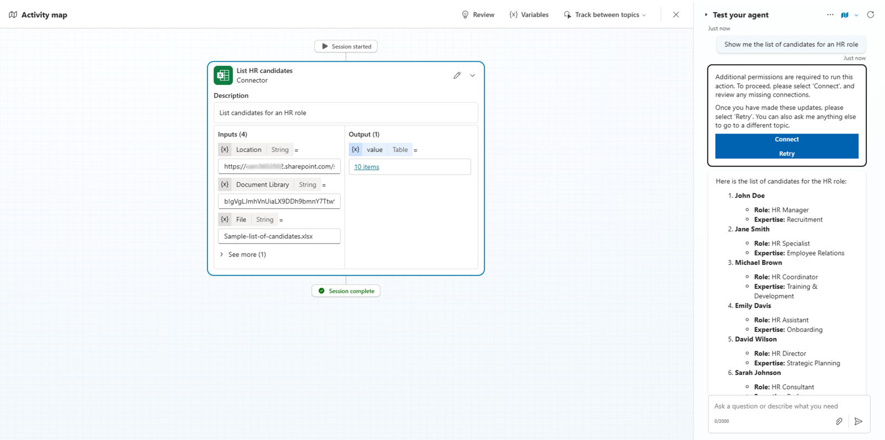
ここまで順調です。次のステップへ進みましょう。
Step 3: Agent flow の利用
ここでは Power Automate フローを呼び出すツールを作成します。ユーザー入力に基づき Excel ブックへ新しい候補者を追加するシナリオを想定します。外部 Power Automate フローを呼び出して Excel テーブルに行を追加するツールを作成します。
まず画面上部の Tools タブで + Add a tool を選択し、新しいツールの作成を開始します。今回は + New tool を選択し Agent flow を選びます。すると Agent flows デザイナーに遷移し、新しいフローが表示されます。
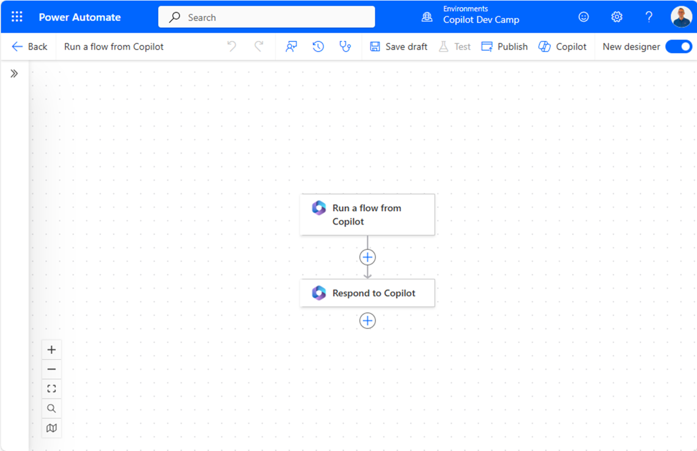
フローには開始トリガー When an agent calls the flow と終了 Respond to the agent があらかじめ用意されています。この 2 つのアクションの間にビジネス プロセスを定義し、Copilot Studio のツールがそれを呼び出します。最初のアクションを選択してプロパティを編集し、入力パラメーターを構成します。
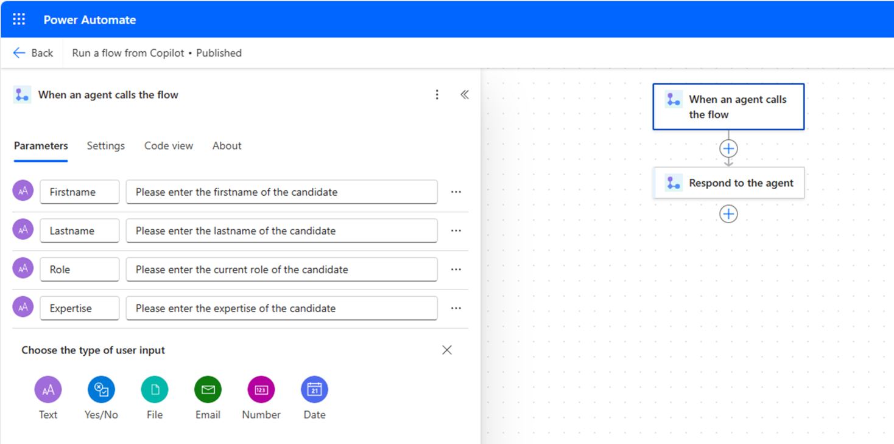
候補者を追加できるよう、以下の 4 つの入力パラメーターを設定します。
- Firstname: text
- Lastname: text
- Role: text
- Expertise: text
次に 2 つの既定アクションの間に Excel Online (Business) コネクターの Add a row into a table アクションを追加します。Excel ブックの候補者リストを対象に設定し、列フィールドとトリガーの入力パラメーターをマッピングします。アクション名を Add new candidate row に変更します。
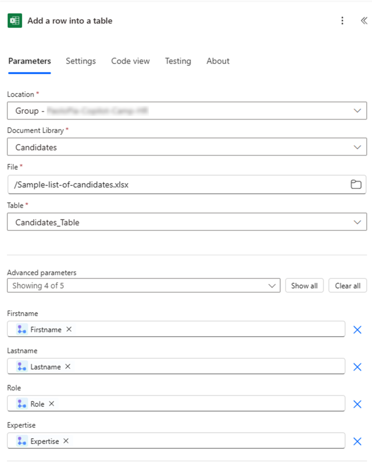
最後の Respond to Copilot アクションを選択し、プロパティで Text 型の出力パラメーター Result を追加します。値には入力パラメーターを用いたメッセージを設定します。
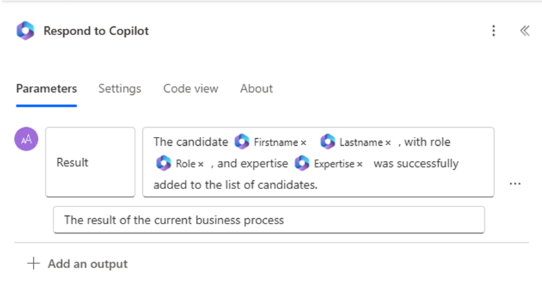
Save draft し、Overview タブの Details でフロー名を Insert new candidate for HR などに変更します。フローを発行し、エージェントに戻ります。再びツールの追加ダイアログを開き、フィルター Flow を選択すると作成した Agent flow が表示されます。表示されない場合は名前で検索します。
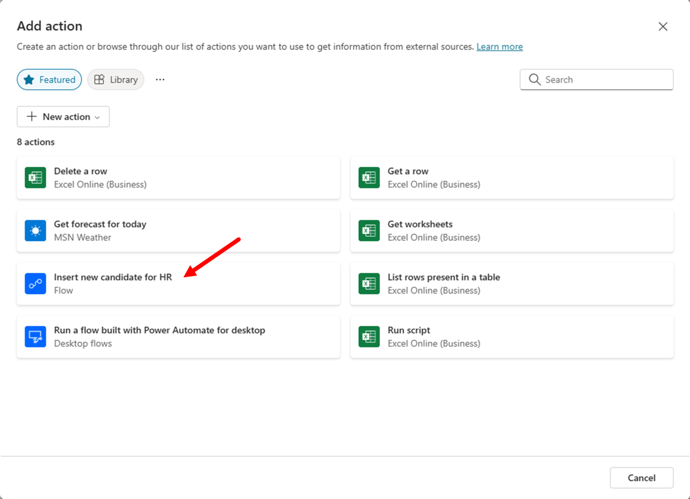
新しいツールを選択し、次のダイアログで Add and configure を選んで設定します。例として以下を使用します。
- Name: Insert new candidate for HR
- Description: Insert new candidate into the Excel spreadsheet for HR
Save を選択すると Agent flow ベースのツールが完成します。次のようなプロンプトでツールを実行してみましょう。
Insert a new candidate into the Excel spreadsheet of HR. The candidate firstname is John,
the lastname is White, the role is "HR Administrator", and the expertise is "Compliance".
前ステップ同様、初回使用時は Excel Online への接続が必要です。Connect を選んで接続後、Retry を選択してツールを実行します。
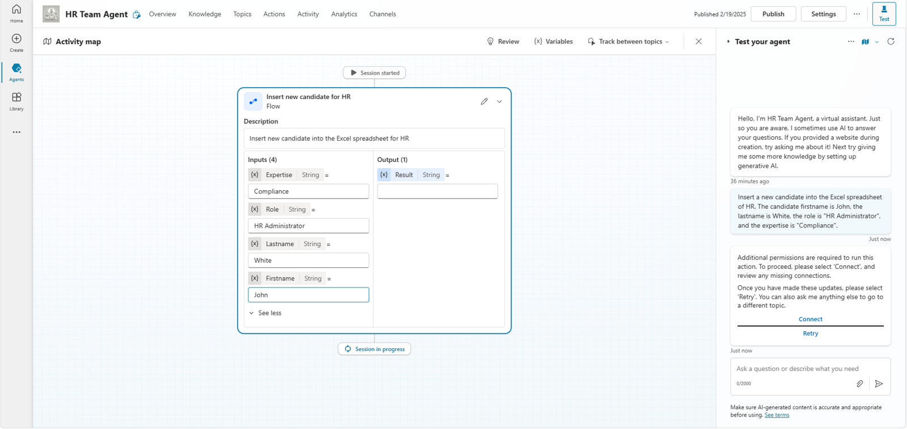
ツール実行後、Power Automate フローで定義したメッセージが返され、Excel テーブルに新しい候補者が追加されます。
Exercise 2 : トピック内からツールを呼び出す
この演習では、作成したツールをトピック内で利用します。
Step 1: トピックからのツール呼び出し
まず空のトピックを作成し、名前を Add a new candidate to Excel とします。ラボ MCS2 Exercise 4 と同じ手順に従ってください。
トリガリングの説明は次のようにします。
This topic helps users to insert new candidates in the Excel spreadsheet of HR.
Triggering sentences can be: add a new a new row to the persistence storage.
簡潔にするため詳細手順はここでは割愛しますが、ラボ MCS2 を参照してください。
以下は Ask with adaptive card アクションで候補者情報を収集するためのアダプティブ カード JSON です。
{
"type": "AdaptiveCard",
"body": [
{
"type": "TextBlock",
"size": "Medium",
"weight": "Bolder",
"text": "New HR Candidate Information"
},
{
"type": "Input.Text",
"id": "firstname",
"placeholder": "First Name"
},
{
"type": "Input.Text",
"id": "lastname",
"placeholder": "Last Name"
},
{
"type": "Input.Text",
"id": "current_role",
"placeholder": "Current Role"
},
{
"type": "Input.Text",
"id": "expertise",
"placeholder": "Expertise"
}
],
"actions": [
{
"type": "Action.Submit",
"title": "Submit"
}
],
"$schema": "http://adaptivecards.io/schemas/adaptive-card.json",
"version": "1.5"
}
次に Add a tool グループから Tool タブを選び、Exercise 1 - Step 3 で作成したツールを追加します。
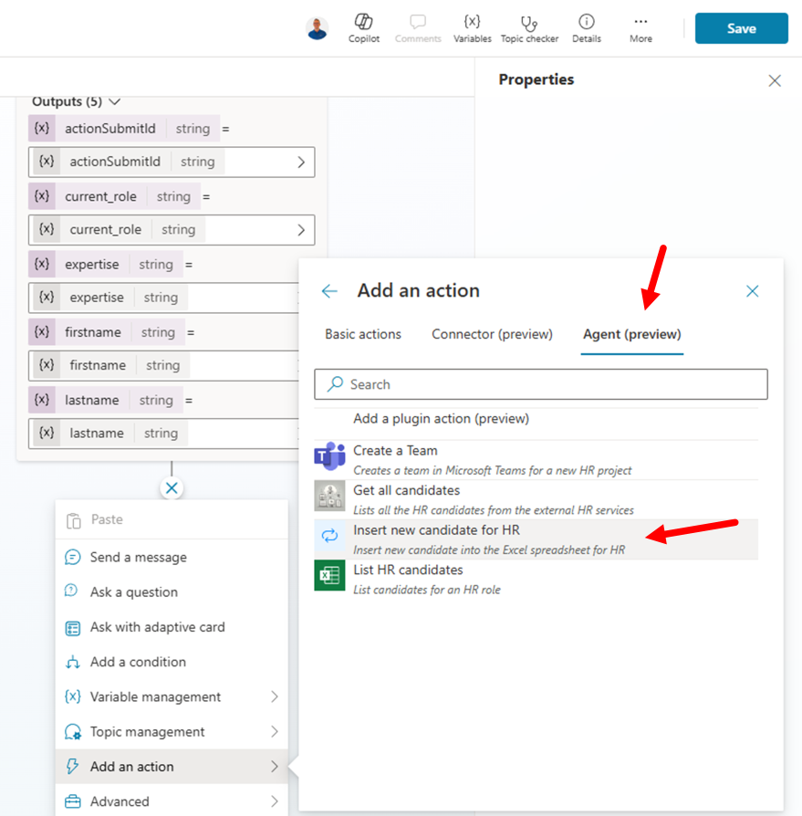
続いて、ツールの入力パラメーターをアダプティブ カードで取得した変数にマッピングします。
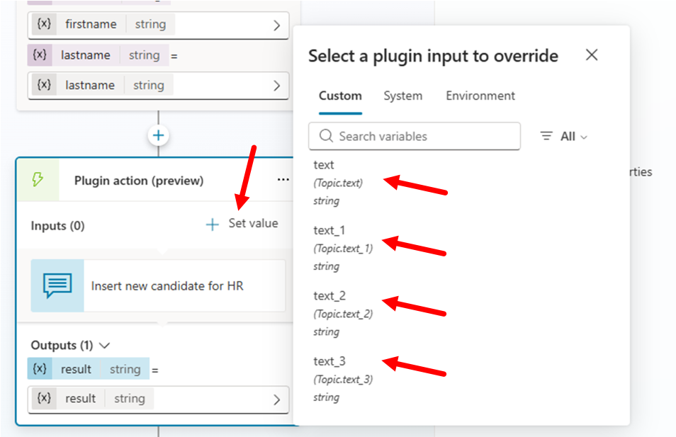
各入力パラメーターを次のように割り当てます。
- text: 名
- text_1: 姓
- text_2: 現在の役割
- text_3: 専門分野
Copilot Studio のデータ バインディングを使い、各入力を Ask with adaptive card で取得したトピック変数に設定します。最終的に下図のようになります。
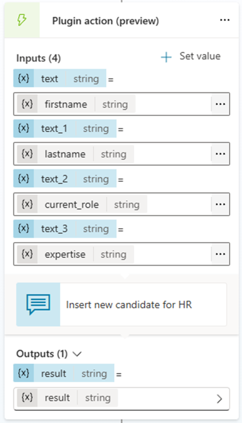
End current topic アクションを追加して保存します。
ラボ MCS2 で作成した他のトピックを無効化し、次のプロンプトで新トピックを起動して Excel に候補者を追加します。
Add a new a new row to the persistence storage
アダプティブ カードに入力し送信すると、トピック経由でツールが実行され、Excel に新しい候補者行が追加されます。
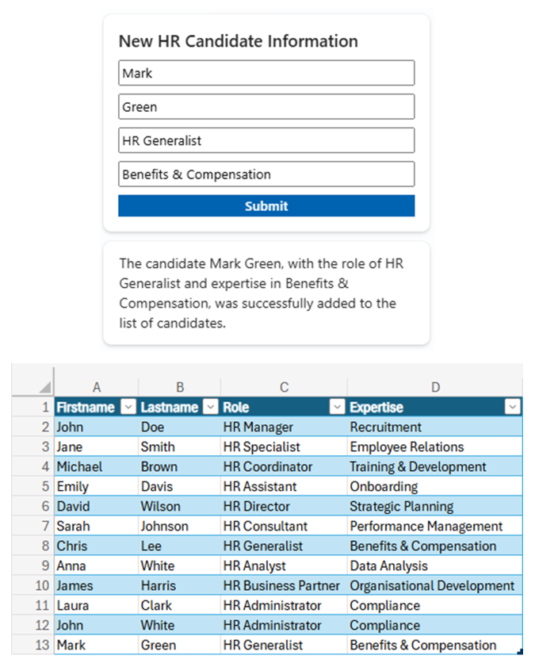
おめでとうございます！
これでエージェントがツールをサポートしました。次のラボでは、Copilot Studio を使用して Microsoft 365 Copilot Chat の Declarative Agents を作成する方法を学びます。
こちらからラボ MCS4 を開始し、Copilot Studio で Microsoft 365 Copilot Chat 用 Declarative Agents を作成する方法を学びましょう。